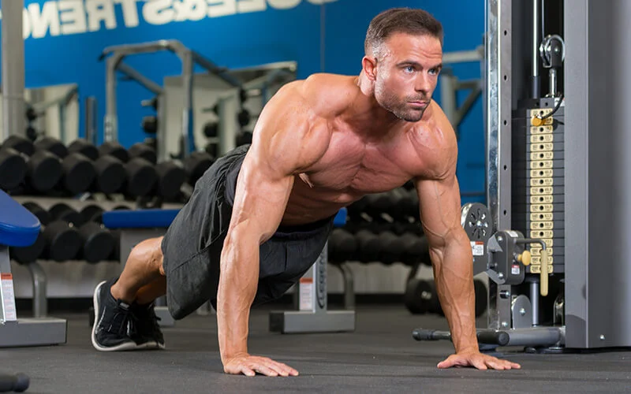
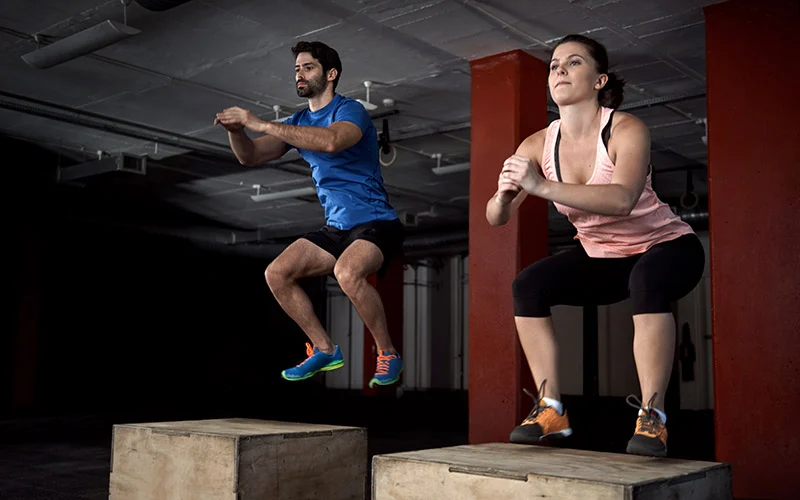
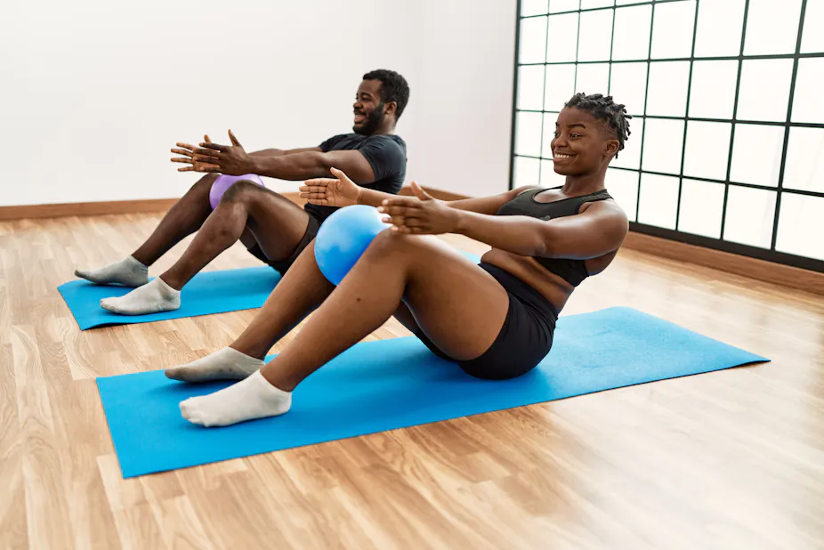

Stability Exercises
Stability exercises are essential for improving balance, core strength, and overall body control. Below are some common stability exercises, the calories you can burn, and how to perform them.
Exercises and Calories Burned
How to Perform Each Exercise
Body Weight Training

Instructions:
- Choose exercises such as push-ups, squats, and lunges.
- Perform each exercise with proper form and control.
- Complete 10-15 repetitions per set, focusing on muscle engagement.
- Take short breaks between sets to maintain intensity.
Tips:
- Engage your core to enhance stability and control.
- Start with basic movements and gradually progress to more advanced variations.
Back to top
Calisthenics

Instructions:
- Include exercises like pull-ups, dips, and leg raises.
- Focus on using your body weight to perform each exercise.
- Maintain proper form and avoid swinging or using momentum.
- Complete 8-12 repetitions per set, emphasizing control and precision.
Tips:
- Engage your core and breathe steadily throughout the exercises.
- Incorporate a variety of movements to target different muscle groups.
Back to top
Plyometrics

Instructions:
- Choose exercises such as jump squats, box jumps, and burpees.
- Perform each movement explosively, focusing on power and speed.
- Land softly and maintain control to avoid injury.
- Complete 10-15 repetitions per set, emphasizing quick, powerful movements.
Tips:
- Warm up thoroughly before performing plyometric exercises.
- Use proper footwear and a cushioned surface to reduce impact.
Back to top
Pilates

Instructions:
- Focus on exercises like the Pilates roll-up, leg circles, and planks.
- Perform each movement slowly and with control.
- Engage your core and breathe deeply throughout the exercises.
- Complete 8-12 repetitions per set, emphasizing form and precision.
Tips:
- Use a mat or cushioned surface for comfort and support.
- Start with beginner exercises and gradually progress to more advanced movements.
Back to top
Back to main page